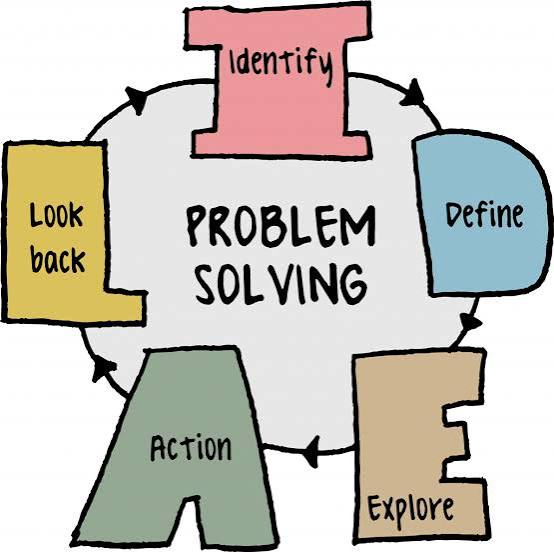
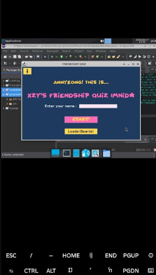
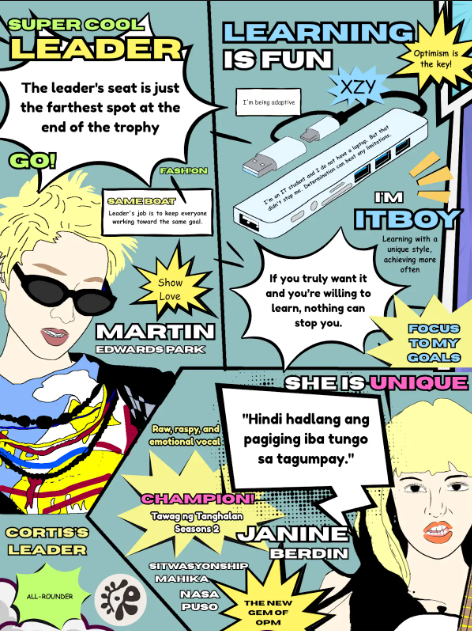
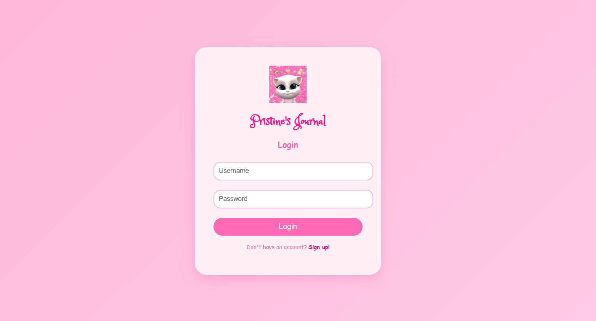
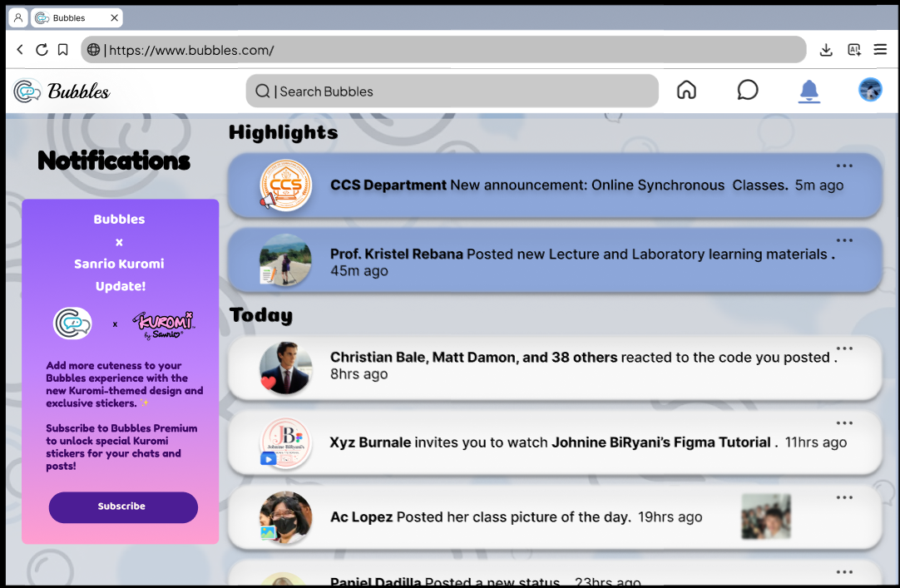
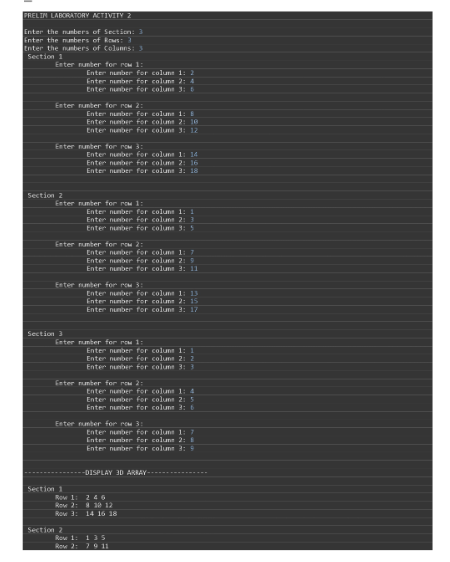
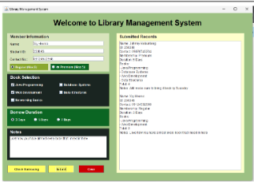
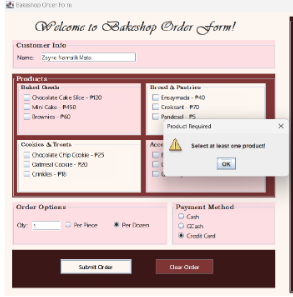
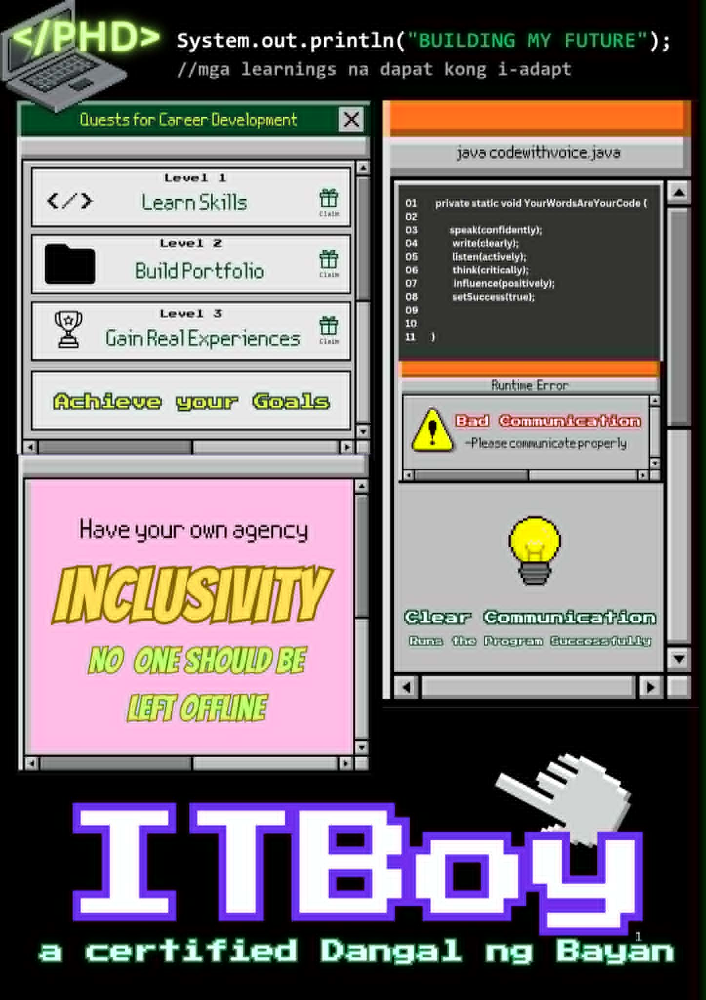

Welcome to Xzy's Porfolio
Hello! My name is Xzy Buenafe. I am a BSIT student who once thought that this field wasn't for me. But with passion, determination, and the willingness to keep learning, I realized that I can also find my place and build my future in the world of technology.
About Me
Personal Information
Hello! I am Xzy A. Buenafe, 19 years old a Bachelor of Science in Information Technology student. I am currently studying at Pamantasan ng Cabuyao. I am interested in technology and enjoy learning how websites and computer programs are created.
Educational Background
- Elementary: Southville 1 Elementary School
- High School: Southville 1 Integrated National High School
- College: Bachelor of Science in Information Technology (BSIT) - Pamantasan ng Cabuyao
I am a Dangal ng Bayan of Pamantasan ng Cabuyao, currently pursuing my BSIT degree. Throughout my studies, I have been learning different programming concepts, web technologies, and computer-related skills. These experiences have helped me improve my problem-solving skills and understand the importance of continuous learning.
Career Goal
My goal is to become a skilled IT professional who can use technology to create meaningful and practical solutions that can help people in their everyday lives. As a BSIT student, I want to continue developing my programming, web development, and problem-solving skills while gaining more knowledge and experience. I hope to find my place in the field of Information Technology and use my passion and creativity to make a positive impact through technology.
My Skills

Problem Solving
From my own experience as an IT student, I have learned to analyze problems and find possible solutions, especially when working on programming activities and projects.

Critical Thinking
I use critical thinking to understand problems, consider different solutions, and choose the best approach based on what I have learned.

Java Programming
I have learned the basics of Java programming through my studies and experience creating programs using arrays, methods, loops, and other programming concepts.

HTML
I have learned how to use HTML to create the basic structure and content of websites through my web development activities.

Teamwork
From working on group projects, I have learned how to communicate, cooperate, and contribute my ideas to help our team accomplish our goals.

Public Speaking
Through class presentations and group activities, I have developed my confidence in expressing my ideas and speaking in front of others.
My Gallery / Portfolio
Here are some of the projects and activities I made.

Project 1
My first personal Friendship Quiz project made by Java Swing.

Project 2
Digital poster I made with my idols with my journey to keep me motivated.

Project 3
An HTML Log In system for my personal journal.

Project 4
My part on a group activity about high-fidelity prototype of a website.

Project 5
A simple Java 3D array system.

Project 6
A group activity about library management system made by Java Swing.

Project 7
A group Java Swing project about Bake Shop Ordering System.

Project 8
Coding inspired poster for our PHD.